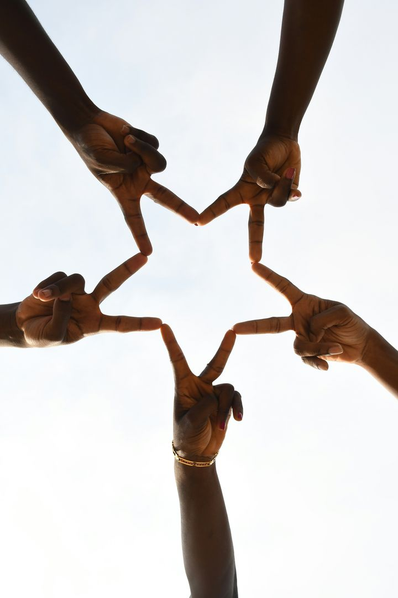

Application
Innovation Challenge 2026
Student well-being · Benin
Makes lives happen.
A light app, built by young people for young people, that helps university students put the phone down and find their people, their pace and their habits, in real life.
Team VIBES · UNSTIM, Abomey, Benin
Three students
Mathematical Engineering and Modelling
YTH Live Global 2026 · Innovation Challenge
At a glance
One idea, in one page.
Imagine a generation that puts the phone down, not out of obligation, but because something better is waiting outside. VIBES is the first step toward that world.
1
The problem
Students lose nights to the scroll. Nothing as attractive waits outside, and few dare to say what they need. A very connected generation, and a very lonely one.
2
The people
University students at UNSTIM first, then other campuses in Benin. Priority: those with no one to go with, who live far from activities, newcomers, and anyone who hesitates to show up alone.
3
The idea
A lightweight web app with three gestures: Discover shared passions and activities, Equip yourself with a private space and tips, Anchor small habits.
4
The value
A first step that is easier: find a small group, know the real cost before going, take a private moment, and get pointed to trusted help when it is too much.
5
The difference
Most apps win when you stay. VIBES wins when you leave. Success is measured in lived hours, not screen time.
6
The plan
We build the MVP ourselves. The award funds what comes next: wider surveys, a youth-led awareness campaign, a supervised pilot and a safe foundation.
3months of design work led by students
5dimensions of well-being: social, physical, emotional, mental, food
10students in our first survey, plus 10 mockup screens and a Design System v1
First survey: 10 students (page 3). It is a signal, not proof; a larger survey comes next.
VIBES · Makes lives happen2
The problem
The challenge
The scroll became their only option.
Our observation on campus is not "young people scroll too much". It is that nobody helps them listen to themselves, and nothing as appealing waits outside. The problem has four layers, from the most visible to the deepest.
1
Attraction
Scrolling is designed to hold you. A student who stays is not lacking willpower. Some of the scrolling is also work (research, freelance); we are not against the phone.
2
The void
When the phone goes down, they do not know what to do that is as good, or with whom. So they go back.
3
The silence
Young people know what they need: talk, move, meet, create. What is missing is a place to admit it without being judged.
4
The invisible
Well-being tools exist, but many students do not know them, or do not see themselves in them.
What the data says
1 in 6people worldwide is affected by loneliness (WHO, 2025)
17–21%of people aged 13 to 29 report feeling lonely (WHO, 2025)
7 of 10students we asked spend more than 6 hours a day on their phone in free time (our survey, n = 10)
55.9%
of 766 students of the Faculty of Health Sciences in Cotonou showed depressive disorders in a published study. One health faculty and depression only: it shows that student well-being in Benin is a real subject, not that it applies to all students.
Our first survey: 10 students, four schools
• 5 of 10 say their phone time is too long for them
• 10 of 10 put social media or videos in their top 3 for free time; 5 add series, anime or manga
• Top barriers to offline activities: no one to go with (4), too far (4), shyness (3), lack of time (3)
• 3 of 10 often lack company; 1 sometimes; 5 rarely; 1 preferred not to answer
• Interest in VIBES after a short description: 7 yes, 3 maybe, 0 no
• Budget for a group activity: 7 of 10 up to 1,000 FCFA; 2 would pay nothing
What it does not show: nobody picked budget or "I don't know what exists" as a main barrier. With 10 respondents, a convenience sample, answers after a favourable description and no link to cause, we read this as a first signal, not proof. A larger survey is the first use of the award.
Sources: WHO, 30 June 2025; Klikpo et al., Health Sciences and Disease, 2020. Survey: team data, n = 10.3
The idea
Our response
Three gestures. Another way to live campus life.
VIBES is prevention, designed by students. We test every feature with one question: did the young person spend less time on the screen and more in real life?
Discover
Find young people who share your passions: football, music, anime, photography, choir. Join events, clubs, or a small Crew so the first time is never alone.
Equip
My Safe Place: a private space to note your mood and receive small, practical gestures. Tips VIBES: short cards written by young Beninese people, in their words.
Anchor
Small Sparks instead of pressure: a walk, a message to a classmate, a screen-free break. No streaks, no rankings, no guilt.
Well-being in five dimensions
SocialPhysicalEmotionalMentalFood
Activities are the means, not the goal. The goal: a young person who feels less alone, more energetic and more confident, with the habit of taking care of themselves.
Our vision
A student arrives in an unfamiliar city. Within days they have found young people who share their passions, a group to play football with, and a place to say how they are. They feel at home. And this well-being depends neither on their money, nor their contacts, nor luck.

A language of our own
"Let's VIBES" replaces "Let's go out". The vocabulary will be tested with young people before it is adopted. Everything written in the app is drafted and polished by a youth editorial committee.
VIBES · Makes lives happen4
The product
The experience
Made for the real moments of student life.
Technology opens the door. Experiences are lived outside.
Discover activities
Filter by day, free or nearby. Date, place and cost shown up front.
Join with confidence
Practical info first: public venue, free, all levels welcome.
Go with a Crew
A small group around an activity. A chat only for people signed up, no private messages.
Take a moment
My Mood: optional, private, no score, no diagnosis.
Tips VIBES
Short tips shared by young people. Health content is planned to be reviewed by professionals.
How it plays out
1. You spot an activity that speaks to you.
2. You join a small group to get organised.
3. You meet up in person, for real.
Screens are working mockups and are subject to change. They show the direction; the first web MVP is being built.
Mockups: VIBES Design System v1 · Inter · palette blue #0154AE, purple #4A2987, turquoise #B0EEF2, yellow #FDDF325
The difference · The team
What sets us apart
A platform that wins when you leave it.
Our central indicator
Lived hours
The real hours of matches, walks, choir rehearsals and creating that VIBES helped trigger; after each activity, the organiser confirms the group’s attendance in a check-in. Time in the app is tracked only as a warning signal: if it rises without lived hours rising too, we fix it.
What we do differently
• Answer all four layers, not only the screen
• A place to tell the truth, without judgment
• A small group removes the fear of coming alone
• Real cost, distance and data use shown before you commit
How we compare
| Solution | What it does | How VIBES differs |
|---|
ChillChezCharlee
France | Mobile app: you share a weekend wish and it groups 2 to 5 nearby people for a first meeting, then circles of 3 to 6. For students; reporting and verified profiles. Prix Pépite 2025 (its site). | The closest idea, and a sign the need is real. VIBES adds a private well-being space, tips by young Beninese, a Benin context (light web app, cost and distance first) and a different measure: lived hours. |
Lynk
letslynk.com | Live video platform: timed one-on-one chats, for dating, friends or hosted events. | Online and one-to-one. VIBES is about meeting in person, in small groups, and is not a dating service. |
| WhatsApp groups and club pages | Already used by clubs to organise. | VIBES builds on them as channels and adds discovery, a first group to join, and cost and distance up front. |
Based on their public websites; we have not tested these products. A wider benchmark in Benin and West Africa is part of the project.
Young people lead

Adéyinka Laurinda ADANLAO
Team lead · ML Engineer in training & Front-end Developer

Charmel Prosper AFFOUKOU
Systems Thinker and Data Scientist
Judicaël Karol DOBOEVI
Business Development & Product Marketing Manager
Built by young people, for young people: three UNSTIM students in systems thinking, data, business and web development.
How young people shape the idea
The idea comes from what we see around us. We have started checking it with students: a first survey of 10 (page 3), then interviews and mockup tests. App content is planned to be written with a youth editorial committee.
Health content will be reviewed
We come from maths, not health. We have asked final-year medical students to review health content. With the award, licensed health professionals will supervise it.
VIBES · Makes lives happen6
Access and safety
Built in from the design
Made for here. Safe from the start.
Who might be left out, and our answer
| Barrier | Our response |
|---|
| Little mobile data, older phone | Lightweight web app, compressed photos, optional SMS or WhatsApp reminders |
| Tight budget | Filter by real cost, free activities first, shared transport inside the Crew |
| Far from campus | Distance filter, activities on site |
| Language | French first, written with young Beninese people; local languages being studied |
| Shyness, disability, first-generation students | Beginner-friendly activities, accessibility information shown, accompanied first visit |
Safeguards we are designing in (planned, not yet built)
Activities
Public activities only, in small groups for the first time. Student events will be checked before publication; the most exposed ones will require a public place, daytime hours and posted rules.
Crew chat
Planned: only for people signed up, no private messages, no phone numbers shown, reporting available, closed 48 hours after the event.
Data
We will collect the minimum. No precise location shared between strangers. What you write in My Safe Place stays private. Feelings questions are optional. Photos private by default.
Reliable information
Tips written with young people and reviewed by professionals for health content. Organisers will be verified.
When it is too much
A "Need help now?" access will stay visible on every screen and point to a trusted person or service. Ambassadors will be trained in listening and referral. The whole system will be tested with young people before any wide opening.
A clear limit
VIBES is a prevention and well-being initiative. It is not a care service, not a diagnostic tool, not medical or psychological advice, and not a dating app. Our starting rule for notifications: two a day (morning and evening) plus reminders for events you joined, to be tested with students. No challenge on tobacco, alcohol, drugs or betting without a professional, and none on restrictive eating or weight.
VIBES · Makes lives happen7
The plan · The investment
The plan
We build first. The award takes it to the next level.
Already here
Design document · Design System v1 · 10 mockup screens · a first survey of 10 students
We fund and build ourselves
The lightweight web MVP · interviews and mockup tests with students · first field work on campus
Roadmap in months (targets) · phases "with the award" start when funds arrive
Nov – Dec 2026
Listen
Survey to 30+ students. Mockup tests with 5 to 10 students. Clickable prototype.
Self-funded
Jan – Mar 2027
Build
Web MVP v1: discover, join, My Mood, Tips. 20 to 30 testers on campus.
Self-funded
Apr – Jun 2027
Prepare
Wider surveys, ambassadors, health review, awareness campaign, hosting.
With the award
Jul – Sep 2027
Pilot
4 to 6 supervised weeks outside exam periods. Lived hours measured.
With the award
Oct – Dec 2027
Share
Open learning report. Decision on a second campus.
With the award
After the award. Beyond December 2027, we will seek in-kind support and co-funding from student federations (FEUA, FEUNSTIM), campus clubs, our schools and the rectorate, and community partners (libraries, ABMS, youth centres). No post-award funding is confirmed yet.
What $5,000 makes possible (proposed allocation)
Wider surveys in other schools and universities, with larger samples and sturdier methods
$1,000
Awareness campaign led by young people: campus workshops, student relays, short content
$1,000
Reinforced pilot: campus ambassadors, activities, data bundles for testers, 4 to 6 weeks
$1,000
Infrastructure: domain, secure hosting, data protection, measurement tool
$750
Health and safety: licensed professionals supervise content, ambassadors trained in listening
$750
Measurement and sharing: lived hours, before and after, learning report, first local-language content
$500
If the award is smaller. At $2,000 or $1,000 we keep the same split and scale the pilot down: fewer campuses, fewer testers, a shorter run. The MVP stays self-funded either way.
The pilot question
Do students feel more connected after a few weeks, come back on their own, and take up new habits? We measure with short before/after questions and total lived hours. No result is claimed yet.
Indicators
Lived hours · self-reported well-being · students who return on their own · real participation · habits installed · accessibility and safety feedback · time in the app (warning signal only).
What we give back to the YTH community. An open learning report (what worked, what did not, anonymised survey data) and a reusable campus kit: survey, activity guide, safety charter, indicators. Another campus or country can take it up.
Allocation is indicative and will be confirmed with local quotes.8
Why us · How we meet the criteria
Why us, why now
We build before we ask.
We build before asking. Three months of design work, a first survey of 10 students, and an MVP we are building ourselves.
We see the problem up close. We know those screen nights, those empty weekends, and the fear of the first step.
We know how to measure. We say what the data does not prove.
We start from the ground. Our campus, its habits, its WhatsApp groups.
We go against the grain. An app judged by what it gives back.
How VIBES answers the selection criteria
| Criterion | Our answer | Page |
|---|
| Relevance | Student isolation and screen overuse: four layers, WHO and Benin data, a first survey of 10 students | 3 |
| Youth leadership | Built by young people, for young people; three students lead, app content planned with a youth editorial committee | 6 |
| Usefulness | Find a group, know the real cost, take a private moment, build habits | 2, 4, 5 |
| Innovation | Success measured in lived hours; the app is judged by how well it sends you offline | 6 |
| Feasibility | Self-funded MVP; award mapped to a 4–6 week supervised pilot | 8 |
| Access | Light web app, cost and distance filters, French first, beginner-friendly | 7 |
| Safety | Planned: private data, verified organisers, reviewed health content, help access on every screen | 7 |
| Replicability | A reusable campus kit (survey, activity guide, safety charter, indicators) and an open report any campus or country can take up | 8 |
| Clarity | One page summary, annotated screens, a clear plan and budget | 2, 5, 8 |
What if the next good thing started here?
Let's VIBES
charmel7.github.io/vibes
prosperaffoukou@outlook.com
Photos: Iwaria Inc and Muhammad-Taha Ibrahim via Unsplash. Sources: WHO, 30 June 2025 (who.int); Klikpo T. et al., Health Sciences and Disease, 2020 (doi 10.5281/hsd.v21i1.1753). Competitors: public websites of ChillChezCharlee and Lynk. Screens are mockups subject to change.
VIBES · Makes lives happen9